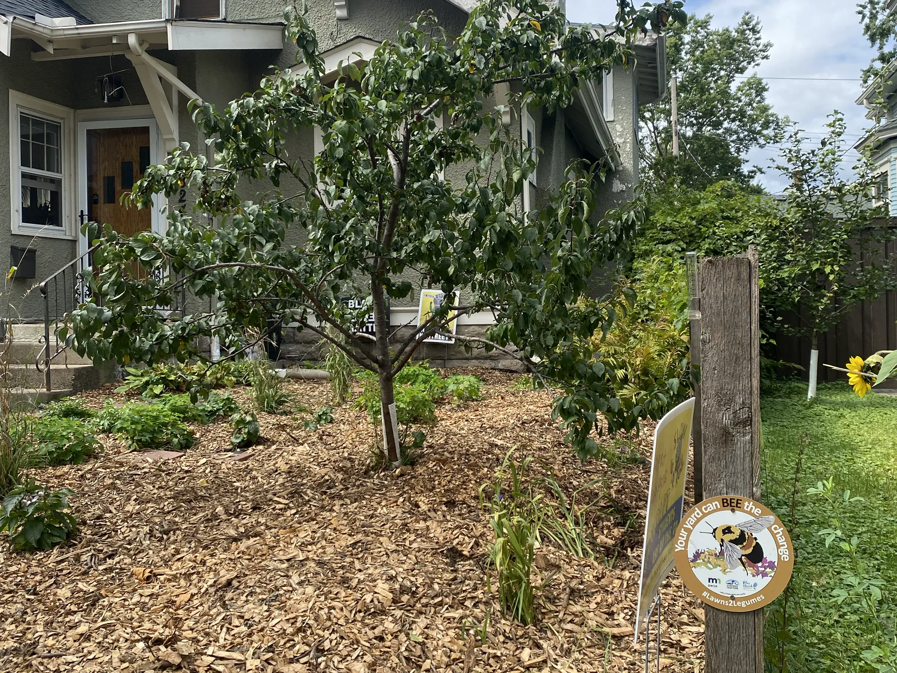
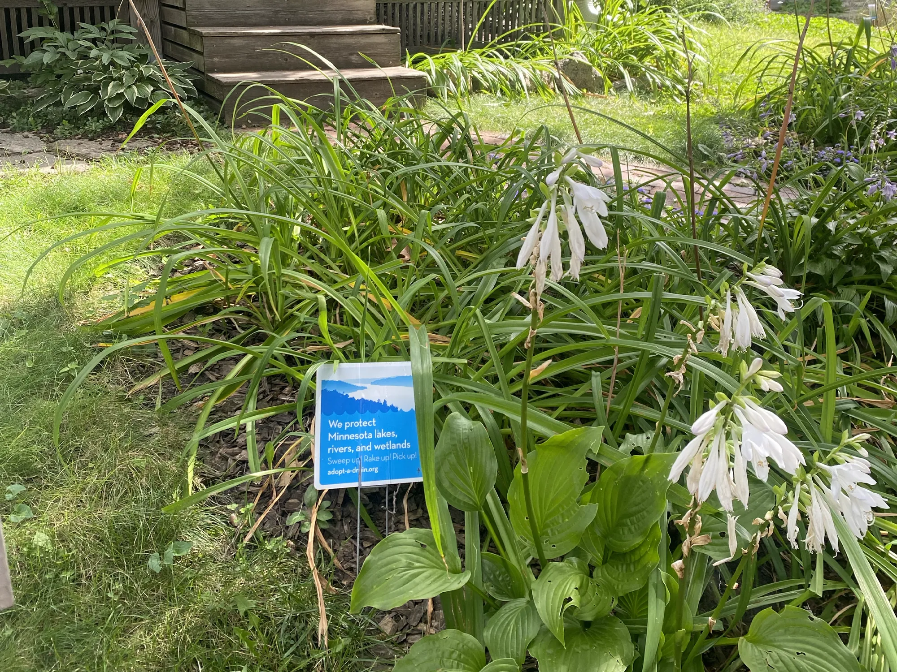

Individual action to improve the environment can feel invisible, ineffectual, and discouraging. How can we motivate engagement by showing the collective impact of these beneficial projects?
The Natural Neighborhood Network connects sustainable gardens throughout South Minneapolis. Every garden makes a difference, but together they create a thriving habitat for the nature next door.
Individual action to improve the environment can feel invisible, ineffectual, and discouraging. How can we motivate engagement by showing the collective impact of these beneficial projects?
People care deeply about their natural surroundings. Our relationship to the environment is a connection to a wider, more complex, existence. It allows one's focus to shift from immediate stresses to the vibrancy of the world and the calming reliability of the seasons. Regional landscapes help define a community, whether agricultural or wild, rural or urban, temperate or tropical, there is pride in how nature reflects local character. Similarly, an individual uses nature to express their values through lawn care, a garden, hunting and conservation, or affinity for a local park. This capstone project aims to engage these tendencies to encourage sustainability and awareness.
A single project has a real, but limited, footprint. A single rain garden or pollinator sanctuary can improve the local environment, but at scale a series of similar projects will dramatically improve waterways and create migratory corridors. Similarly, a single project can spark neighborly curiosity and learning while large scale engagement will lend momentum to collective advocacy and education.
The Natural Neighborhood Network uses design to aid this momentum by creating a vehicle to connect small, diverse, individual projects together into an empowering web. It is a physical marker that will use design to tie unique personal projects to others through intent and execution.
My interest in this project is tied to seeing the changes in Minnesota’s landscape due to a warming climate. The loss of ash trees makes this shift evident. Milder winters allow invasive insects to spread further into the state. A less visible impact is the long term change in native regional biomes.
Ash Tree Invasion
My interest in this project is tied to seeing the changes in Minnesota’s landscape due to a warming climate. The loss of ash trees makes this shift evident. Milder winters allow invasive insects to spread further into the state. A less visible impact is the long term change in native regional biomes.
My interest in this project is tied to seeing the changes in Minnesota’s landscape due to a warming climate. The loss of ash trees makes this shift evident. Milder winters allow invasive insects to spread further into the state. A less visible impact is the long term change in native regional biomes.
Captions and Pull Quotes can go Here, just like this. Sorry about the Star Trek.
 Now what are the possibilities of warp drive? Cmdr Riker's nervous system has been invaded by an unknown microorganism. The organisms fuse to the nerve, intertwining at the molecular level. That's why the transporter's biofilters couldn't extract it. The vertex waves show a K-complex corresponding to an REM state. The engineering section's critical. Destruction is imminent. Their robes contain ultritium, highly explosive, virtually undetectable by your transporter.
Sensors indicate no shuttle or other ships in this sector. According to coordinates, we have travelled 7,000 light years and are located near the system J-25. Tractor beam released, sir. Force field maintaining our hull integrity. Damage report? Sections 27, 28 and 29 on decks four, five and six destroyed. Without our shields, at this range it is probable a photon detonation could destroy the Enterprise.
It indicates a synchronic distortion in the areas emanating triolic waves. The cerebellum, the cerebral cortex, the brain stem, the entire nervous system has been depleted of electrochemical energy. Any device like that would produce high levels of triolic waves. These walls have undergone some kind of selective molecular polarization. I haven't determined if our phaser energy can generate a stable field. We could alter the photons with phase discriminators.
I have reset the sensors to scan for frequencies outside the usual range. By emitting harmonic vibrations to shatter the lattices. We will monitor and adjust the frequency of the resonators. He has this ability of instantly interpreting and extrapolating any verbal communication he hears. It may be due to the envelope over the structure, causing hydrogen-carbon helix patterns throughout. I'm comparing the molecular integrity of that bubble against our phasers.
Now what are the possibilities of warp drive? Cmdr Riker's nervous system has been invaded by an unknown microorganism. The organisms fuse to the nerve, intertwining at the molecular level. That's why the transporter's biofilters couldn't extract it. The vertex waves show a K-complex corresponding to an REM state. The engineering section's critical. Destruction is imminent. Their robes contain ultritium, highly explosive, virtually undetectable by your transporter.
Run a manual sweep of anomalous airborne or electromagnetic readings. Radiation levels in our atmosphere have increased by 3,000 percent. Electromagnetic and subspace wave fronts approaching synchronization. What is the strength of the ship's deflector shields at maximum output? The wormhole's size and short period would make this a local phenomenon. Do you have sufficient data to compile a holographic simulation?
Unidentified vessel travelling at sub warp speed, bearing 235.7. Fluctuations in energy readings from it, Captain. All transporters off. A strange set-up, but I'd say the graviton generator is depolarized. The dark colourings of the scrapes are the leavings of natural rubber, a type of non-conductive sole used by researchers experimenting with electricity. The molecules must have been partly de-phased by the anyon beam.
Deflector power at maximum. Energy discharge in six seconds. Warp reactor core primary coolant failure. Fluctuate phaser resonance frequencies. Resistance is futile. Recommend we adjust shield harmonics to the upper EM band when proceeding. These appear to be some kind of power-wave-guide conduits which allow them to work collectively as they perform ship functions. Increase deflector modulation to upper frequency band.
Resistance is futile.